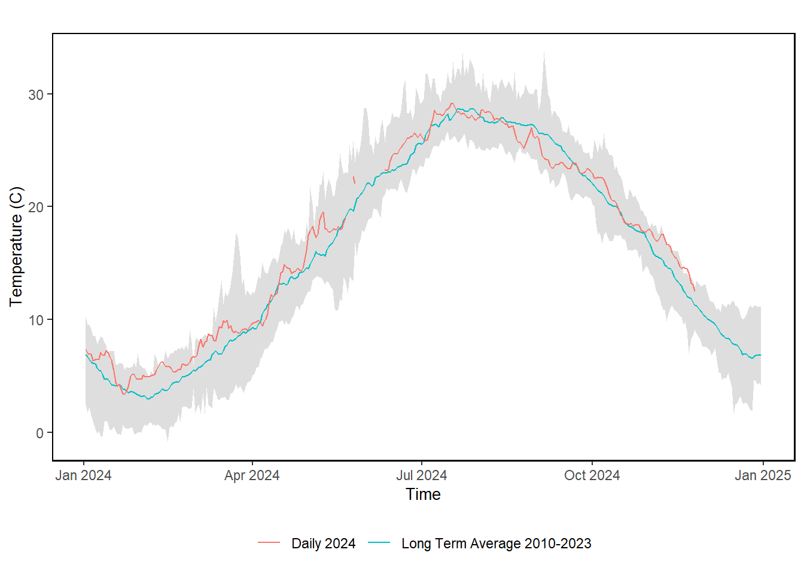

58 Chesapeake Bay Temperature
Last updated July 23, 2026
Description: This data is collected from the CBIBS buoy system.
Contributor(s): Charles Pellerin
Affiliations: NEFSC
Indicator Family:
Indicator Category:
Synthesis Theme:
58.1 Introduction to Indicator
Temperature data from the Chesapeake Bay Interpretive Buoy System (CBIBS) are used to monitor water conditions and identify conditions capable of impacting the Chesapeake Bay marine ecosystem.
58.2 Key Results and Visualizations
Surface water temperatures at Gooses Reef show a distinct seasonal pattern. The 2024 daily temperature averages closely align with the historical averages throughout the year. However, 2024 daily temperature averages were above the historical averages during the Spring and mid Fall.
Mid-Atlantic

58.3 Implications
Since 2007, the Chesapeake Bay Interpretive Buoy System (CBIBS) has provided invaluable, high-quality water quality data, underscoring the critical need for continuous monitoring of key parameters. The system has consistently collected robust data on meteorological, water quality and oceanographic parameters. While the system experienced maintenance challenges inherent in complex observational systems deployed in dynamic marine environments, the vast majority of the data collected is reliable and paints a picture of ongoing changes in Chesapeake Bay. This publicly available resource provides a high degree of confidence for Chesapeake Bay stakeholders, and is a vital tool for informing evidence-based environmental management decisions. The long-term nature of the CBIBS dataset allows for the detection of long-term trends in water column habitat and the assessment of restoration efforts.
Surface water temperatures during 2024 were mostly at or above historical averages across all sites, with notably above average temperatures during spring and summer months, and greater instances of at or below historical average temperatures towards the end of the year. The above average temperatures observed in the spring and summer months, may have had important effects on key living resources, such as striped bass, oysters, and other fish species within Chesapeake Bay. Above average temperatures could lead to decreases in the area of suitable habitat, disruptions in migration patterns, increased stress and mortality of aquatic species, and other negative impacts on key living resources within the Chesapeake Bay. Specifically, water temperatures above 82.4°F exceed suitable habitat thresholds for striped bass from about mid-July to mid-August at all buoy locations where data was available. Water temperatures coupled with low dissolved oxygen during spring and summer exacerbate impacts on habitat suitability for striped bass, blue crabs and other species. A number of anglers reported good catches of red drum during the summer. During this summer’s routine sampling at Poplar Island, NOAA Chesapeake Bay Office scientists recorded the highest number of red drum since monitoring began in 1995. This may indicate habitat conditions in the lower and upper Bay are conducive to red drum. This may be related to rising water temperatures linked to climate change as well as conservation measures implemented by management agencies. However, there are few new studies focused on understanding these changes.
58.4 Indicator statistics
Spatial scale: Main stem of the Chesapeake Bay
Temporal scale: Annual
Variable definitions
58.5 Get the data
Point of contact: Charles Pellerin (charles.pellerin@noaa.gov)
ecodata dataset: ecodata::ch_bay_temp
Tech Doc link: https://noaa-edab.github.io/tech-doc/ch_bay_temp.html